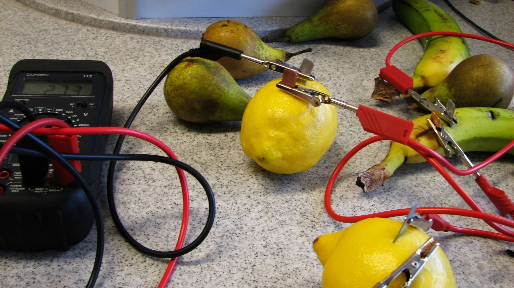

Fruits and vegetables can function as electrochemical power sources; however, their efficiency is limited by complex charge transfer processes and internal losses. Investigate the mechanisms of electricity generation in bioelectrochemical systems and the factors that determine their energy efficiency. How do electrode properties, the chemical composition of the medium, system geometry, and polarization processes affect the output power, internal resistance, and long-term operational stability?

Fruits and vegetables can serve as a current source, although their efficiency is extremely low. You have probably seen a classic experiment where a nail and a coin are inserted into a regular ripe lemon and then connected with wires to an LED. The LED lights up. But where does the energy come from? A lemon does not produce electricity on its own. The fruit acts as a connecting link, while the actual chemical processes are hidden inside. Regarding the mechanism of current generation, this system is analogous to Volta's galvanic cell, where the acidic juice of the fruit replaces the laboratory electrolyte. The process is based on a redox reaction. The fruit serves as an electrolyte or conducting medium, while the current is generated by metallic electrodes. At the anode, an oxidation reaction takes place in the acidic environment on its surface, during which free electrons are released. Two electrons leave each zinc atom contained in the nail. The cathode is copper, which is a strong oxidizing agent. In this case, it is a coin inserted into the lemon, and it can attract the electrons released by the zinc. All these processes occur solely due to the electrolytic medium of the lemon, and the free electrons move inside the fruit. Speaking of energy balance and efficiency, the practical output voltage is always less than the theoretical value due to internal losses. Electromotive force represents the theoretical maximum voltage without a load, which depends on the potential difference between the metals. According to Ohm's law for a complete circuit, which involves current, electromotive force, load resistance, and the internal resistance of the battery, the useful power can be determined. By solving this relationship mathematically, it is found that the maximum power is achieved under the condition that the load resistance equals the internal resistance. Several efficiency factors determine the performance of the system. First are the properties of the electrodes. The electrode material matters because the further apart the metals are in the activity series, the higher the electromotive force. Furthermore, a larger surface area of contact between the electrode and the fruit results in lower internal resistance and higher current. Second is the chemical composition of the medium or fruit. High acidity, which means a high concentration of hydrogen ions or a low pH level, improves conductivity and accelerates the reaction at the cathode. A lemon has a pH of 2 to 2.6, and such high acidity significantly accelerates the redox reactions on the electrodes. Viscosity also plays a role since ion diffusion is slowed down in dense fruits like potatoes, which increases internal resistance. The system's geometry and polarization also influence efficiency. In terms of geometry, the distance between the electrodes is key; according to the formula for conductor resistance, which depends on the distance between the electrodes and the cross-sectional area or the volume of the medium between them, a smaller distance results in lower internal resistance. The process of polarization leads to a drop in power. Polarization is the deceleration of chemical reactions on the electrodes during current flow. Activation polarization represents the energy barrier for charge transfer at the metal-juice interface, while concentration polarization is caused by a decrease in the concentration of potential-determining ions near the electrode surface during electrolysis. Long-term stability explains why such systems quickly degrade. Bioelectrochemical elements are short-lived for three reasons. First is anode consumption, where zinc physically dissolves during the reaction. Second is electrode passivation, as the surface of the metals becomes covered with an oxide film or gas bubbles, isolating them from the medium. Third is electrolyte degradation, meaning that the fruit dries out, oxidizes in the air, and rots, which changes its chemical composition and increases the internal resistance. In conclusion, fruit batteries have a low efficiency due to high internal resistance, rapid concentration polarization, and the chemical instability of living tissue. Their use is justified exclusively for educational purposes to demonstrate the laws of electrochemistry.